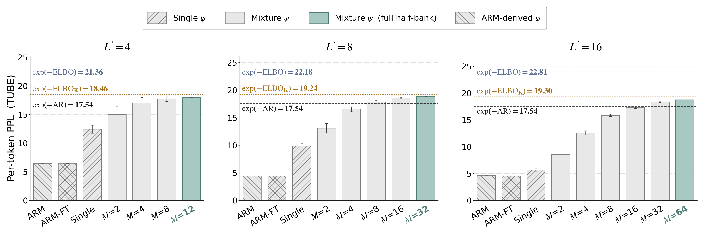

Log-likelihood is a standard metric for evaluating generative models. Unfortunately, in contrast to autoregressive models (ARMs), discrete diffusion models generally do not admit exact computation of this quantity. Existing evaluations, therefore, rely on the evidence lower bound (ELBO), leaving unclear how much higher the true value may be. We address this by introducing the Tangent Upper Bound on Evidence (TUBE), a variational upper bound on log-likelihood that admits an unbiased Monte Carlo estimator. Our TUBE extends across latent-variable models, including masked diffusion models (MDMs), any-order ARMs (AO-ARMs), and block variants of both. Applied to block MDMs and block AO-ARMs, TUBE reveals our key empirical finding that these models lie strictly below the exact ARM baseline, showing that ARMs still dominate in likelihood.
Masked diffusion and any-order autoregressive models build a sequence by progressively unmasking its positions. The order in which positions are filled is itself a latent variable: the same sentence can be produced by many different generation orders, and the model likelihood averages over all of them. This is precisely why the likelihood is intractable — unlike a left-to-right autoregressive model, there is no single order to read it off from.
This latent-order view unifies models that look different on the surface. An any-order ARM commits one token per step, whereas a multi-token (block) diffusion model can commit several tokens at once — or none — per step. Both are simply different distributions over generation orders under one framework, which is exactly the setting our bound is designed to evaluate.

Our method of constructing an upper bound on $\log p(x)$ rests on the concavity of $\log a$ as a function of $a$, and on the tangent majorization of $\log a$ by its first-order Taylor expansion at a point $b$, namely $\;\log a \le \log b + \frac{a-b}{b}\;$ for all $a,b>0$. Instantiating this at $a=p(x)$ and a tractable surrogate $b=\psi(x)$ yields the Tangent Upper Bound on Evidence (TUBE):
with equality iff $\psi(x)=p(x)$.
TUBE is linear in the model likelihood, so it admits an unbiased Monte-Carlo estimator that preserves the bound. Together with the ELBO, it brackets the true log-likelihood from both sides:
We call an empirical estimator bound-preserving if its expectation provably preserves the bound direction. Prior upper-bound estimators (CUBO, TVO, IS-VG-B) apply a nonlinear $\log$ or self-normalized weights to a Monte-Carlo mean, so by Jensen’s inequality their finite-sample expectation can break the bound (terms in red). TUBE is linear in the model likelihood, so its Monte-Carlo estimator stays bound-preserving.
| Bound | Type | Empirical estimator | Bound-preserving? |
|---|---|---|---|
| ELBO | Lower | $\log p_{\mathrm{model}}(x\mid\pi^{(1)})$ | ✓ |
| $\mathrm{ELBO}_K$ | Lower | $\log\!\left(\tfrac1K\sum_{k=1}^K p_{\mathrm{model}}(x\mid\pi^{(k)})\right)$ | ✓ |
| $\mathrm{CUBO}_{\beta\ge1}$ | Upper | $\tfrac1\beta\,{\color{red}{\log}}\!\left(\tfrac1K\sum_{k=1}^K p_{\mathrm{model}}(x\mid\pi^{(k)})^{\beta}\right)$ | ✗ |
| $\mathrm{TVO}_\Lambda^{U}$ | Upper | $\tfrac1\Lambda\sum_{\lambda=1}^\Lambda\sum_{k=1}^K {\color{red}{\bar w_k^{(\beta_\lambda)}}}\,\log p_{\mathrm{model}}(x\mid\pi^{(k)})$ | ✗ |
| IS-VG-B | Upper | $\tfrac1{n_p}\sum_{j=1}^{n_p}{\color{red}{\log}}\!\left(\tfrac1s\sum_{i=1}^s p_{\mathrm{model}}(x\mid\pi^{(j,i)})\right)+{\color{red}{\log}}\!\left(\tfrac1{n_p}\sum_j \frac{\sum_i p_{\mathrm{model}}(x\mid\tilde\pi^{(j,i)})}{\sum_i p_{\mathrm{model}}(x\mid\pi^{(j,i)})}\right)$ | ✗ |
| TUBE (Ours) | Upper | $\log\psi(x)+\dfrac{\tfrac1K\sum_{k=1}^K p_{\mathrm{model}}(x\mid\pi^{(k)})-\psi(x)}{\psi(x)}$ | ✓ |
On both OWT and LM1B, in every configuration the AO-ARM / MDM perplexity lies strictly above the exact ARM baseline — ARMs still dominate in likelihood across all block sizes $L'\in\{4,8,16\}$ and generation regimes. The gap to ARM shrinks as the number of function evaluations (NFE) grows. Among upper estimators, TUBE is the only bound-preserving one: TVO and IS-VG-B sit above $\mathrm{ELBO}_K$ once NFE $\ge$ 2, and CUBO's bias makes it unreliable as well.
| $L'$ | Regime | Biased upper estimators | Ours | References | Gap | ||
|---|---|---|---|---|---|---|---|
| CUBO$_{\beta=2}$ | TVO$_U$ | IS-VG-B | TUBE | $\mathrm{ELBO}_K$ | |||
| 4 | NFE=1 | 97.78 | 97.78 | 97.78 | 97.78 | 97.78 | 80.24 |
| NFE=2 | 24.34 | 27.68 | 29.11 | ≥21.55 | ≤27.40 | 4.01 | |
| NFE=4 | 19.78 | 21.89 | 22.52 | ≥19.16 | ≤21.63 | 1.62 | |
| AO-ARM | 17.50 | 18.55 | 18.76 | ≥17.74 | 18.46* | 0.20 | |
| 8 | NFE=1 | 221.54 | 221.54 | 221.54 | 221.54 | 221.54 | 204.00 |
| NFE=2 | 29.04 | 33.41 | 34.95 | ≥24.32 | ≤32.63 | 6.78 | |
| NFE=4 | 20.90 | 23.54 | 24.15 | ≥20.23 | ≤23.25 | 2.69 | |
| NFE=8 | 18.85 | 20.83 | 21.17 | ≥19.15 | ≤20.67 | 1.61 | |
| AO-ARM | 17.95 | 19.31 | 19.46 | ≥18.67 | ≤19.24 | 1.13 | |
| 16 | NFE=1 | 398.63 | 398.63 | 398.63 | 398.63 | 398.63 | 381.09 |
| NFE=2 | 35.80 | 39.80 | 41.93 | ≥22.50 | ≤38.43 | 4.96 | |
| NFE=4 | 22.89 | 25.21 | 25.96 | ≥19.03 | ≤24.75 | 1.49 | |
| NFE=8 | 19.59 | 21.38 | 21.77 | ≥18.44 | ≤21.14 | 0.90 | |
| NFE=16 | 18.44 | 19.98 | 20.26 | ≥18.22 | ≤19.83 | 0.68 | |
| AO-ARM | 18.08 | 19.39 | 19.56 | ≥18.47 | ≤19.30 | 0.93 | |

@article{ivanov2026tube,
title = {TUBE: Tangent Upper Bound on Evidence for Discrete Diffusion Language Models},
author = {Ivanov, Arseny and Kholkin, Sergei and Gromadskii, Vladislav and
Ksenofontov, Grigoriy and Oseledets, Ivan and Korotin, Alexander},
journal = {arXiv preprint arXiv:2605.24292},
year = {2026}
}